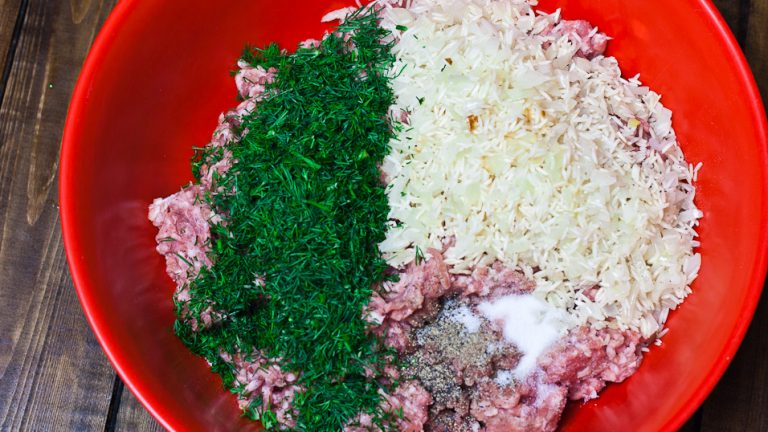
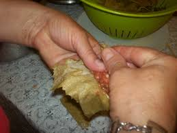
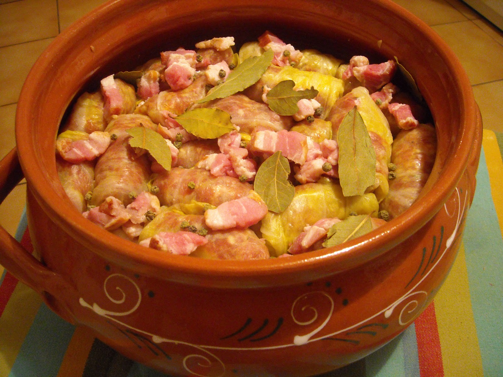

Here’s my tried and true cabbage rolls recipe that is a must have for every Christmas. The other thing that we do with cabbage rolls, is we add some kind of smoked meat or smoked bacon. The idea of adding smoked meat is to add some smoked flavor. It really makes the cabbage rolls taste great.
First of all, chop the onion and saute it with the oil, just enough until the onion is translucent. I also like to add the rice to the onion and cook it together for a minute or so. In a large bowl, add the ground pork, dill, onion, rice, and salt and pepper. Use your hands to mix all the ingredients together. Make sure you mix it well.

For these cabbage rolls, I used 2 smaller sour cabbages because we couldn’t find a large one. After you’ve soaked the cabbage in water, remove the leaves off the cabbage one by one, and cut each leaf in two, if the leaf is too big. I also cut the core piece off. Place them on a plate so they are ready for you when you start rolling. Start rolling the cabbage rolls. I like mine a bit smaller, but I know some people make them really large. I usually use about 1 to 2 tablespoons of the meat mixture in each rolls. Roll them up and line them up in your dish. After the first row add the bacon in between the rolls. Continue until done with meat mixture.

Get your bacon ready as well or whatever smoked meat you use, just cut it up in smaller pieces.
With the remaining sour cabbage, usually I leave some leaves on the core and I chop it up and place at the bottom of my big baking dish. Depends on how many cabbage rolls you’re making but you’ll need a fairly big dish, that’s deep enough to hold at least 2 rows of cabbage rolls.

Pour the liter of tomato juice all over the cabbage rolls. If the cabbage rolls are not completely covered, add water. Cover them up with the lid, or aluminum foil and bake in a preheat 375 F degree oven for 2 hours. After two hours, you’ll notice most of the juice has evaporated so you might need to add more water, you don’t necessarily have to fill it up to the top this time. Bake for another 2 hours without the lid on.